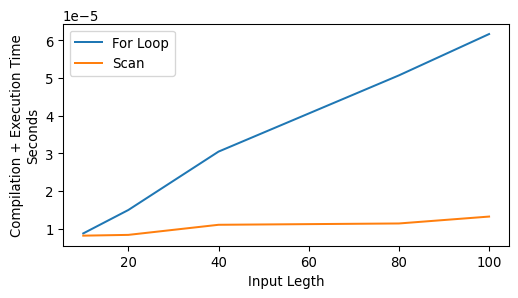

This post introduces some of JAX basic building blocks. It is not an exhaustive collection but will include most components used in this series of blog posts.
In order to leverage the speedup granted by the XLA compiler JAX first needs to transform python code in a set of lower-lever and strictier set of instructions: a jax expression. Let’ s see how this expression would look like
import jax import jax.numpy as jnpdef my_foo(x): x_1 = x x_2 = jnp.square(x) x_3 = jnp.power(x, 3) out = x_1 + x_2 + x_3return outprint(jax.make_jaxpr(my_foo)(3.0))
{ lambda ; a:f32[]. let
b:f32[] = square a
c:f32[] = integer_pow[y=3] a
d:f32[] = add a b
e:f32[] = add d c
in (e,) }
as we can see our variables have now an explicit type (f32) and the functions jnp.square and jnp.power have been replaced by the lax equivalent integer_pow. lax can be thought as a sort of JAX low-level back-end. This expression will be then sent to the XLA compiler for being transformed in efficient machine code.
But what happens to our jax expression if we try to poke one of JAX sharp edges? Let’s introduce a side effect in our function and see
import jax import jax.numpy as jnpaccumulator = [] # global variabledef my_foo_with_side_effect(x): x_1 = x x_2 = jnp.square(x) x_3 = jnp.power(x, 3) out = x_1 + x_2 + x_3 accumulator.append(jnp.power(out, 2)) # side effectreturn outprint(jax.make_jaxpr(my_foo_with_side_effect)(3.0))
{ lambda ; a:f32[]. let
b:f32[] = square a
c:f32[] = integer_pow[y=3] a
d:f32[] = add a b
e:f32[] = add d c
_:f32[] = integer_pow[y=2] e
in (e,) }
as we can see our accumulator variable is not tracked in the jax expression neither are its associated computations! They will not be tracked by the compiler nor retrieved when the cached version of foo is executed a second time.
We know that most JAX functionalities (e.g. computing gradients) are achieved by applying the appropriated transformations to the functions of interest. These transformed functions will go down the same route of being translated into the relevant jax expression and compiled by XLA. Let’s unravel what the gradient of foo would look like
from jax import gradgrad_my_foo = grad(my_foo) # we derive the gradient function of my_fooprint(jax.make_jaxpr(grad_my_foo)(3.0))
{ lambda ; a:f32[]. let
b:f32[] = square a
c:f32[] = mul 2.0 a
d:f32[] = integer_pow[y=3] a
e:f32[] = integer_pow[y=2] a
f:f32[] = mul 3.0 e
g:f32[] = add a b
_:f32[] = add g d
h:f32[] = mul 1.0 f
i:f32[] = add_any h 1.0
j:f32[] = mul 1.0 c
k:f32[] = add_any i j
in (k,) }
We can see how the derived jax expression now tracks all the required computations for computing the gradient pf my_foo with respect to its input x. We will expand more on the grad function later on this post. Let’s move now to another very important feature of JAX: random number generation.
2 ARRRRGH!!!! explicit PRNG states
Generate random numbers using numpy it is a relatively straightforward matter:
x_1 = np.random.normal() # numpy is both easy...print(x_1)x_2 = np.random.normal() # ...and intuitive!print(x_1 == x_2)
1.0415928805928754
False
under the hood numpy will do alot of wizardry for us implicitly setting the state of the Pseudo-Random Number Generator (PRNG) every time we ask to simulate sampling from a given distribution (e.g. uniform, normal etc…). With JAX we must do a bit more work as the library requires to explicitly pass a state whenever we call the PRNG
from jax import random# jax is less easymaster_key = random.PRNGKey(666) # set the state with a seedprint(f"Key {master_key}")random.normal(key=master_key) # sample from the standard normal
Key [ 0 666]
Array(-0.10761635, dtype=float32)
this implies that the numbers are deterministically generated at random given a certain state. Hence if we do not make sure to generate fresh new states whenever we require a new random behaviour we might incur in some rather nasty side effects
accumulator =0for _ inrange(100): x_1 = random.normal(key=master_key) # generate two numbers using the same state x_2 = random.normal(key=master_key) accumulator +=int(x_1 == x_2)print(accumulator)
100
Without modifying the state, calling random.normal will always generate the exact same sequence of random numbers! What we need to do in this case is to leverage the split function in the random module for splitting the original state (or key) in one or more sub-states (or sub-keys)
accumulator =0seed_key = master_keyfor _ inrange(100): seed_key, consume_key_1, consume_key_2 = random.split(seed_key, 3) # one key always left for generation x_1 = random.normal(key=consume_key_1) # generate two numbers using different states x_2 = random.normal(key=consume_key_2) accumulator +=int(x_1 == x_2)print(accumulator)
0
despite this behaviour might look as a big annoyance at first, it offers us a greater degree on control of when and where we want to see randomness.
3 Just In Time Compilation
One of the advantages of JAX is its ability to Just In Time (JIT) compile python code to different types of accelerating devices, be them CPU, GPU or TPU. By compiling and caching slow python code to optimized machine code. So let’s see a simple example
def silly_expensive_loopy_function(x):"""A silly function, it does many completely useless computations. However it is very loopy and expensive. Args: x (float): starting point of the silly function Returns: x (float): output of the silly function """for i inrange(10):for j inrange(10): for k inrange(10): x += i + j + k + i*j + j*k + j**2+ k**2return xprint("Pure Python")%timeit silly_expensive_loopy_function(10.)
Pure Python
54.7 μs ± 202 ns per loop (mean ± std. dev. of 7 runs, 10,000 loops each)
as we can see we have a quite hefty execution time, but what happens if we JIT compile our function through the relevant JAX transformation?
from jax import jitjitted_silly_expensive_loopy_function = jit(silly_expensive_loopy_function)print("Jitted Python with Compilation Time")%timeit jitted_silly_expensive_loopy_function(10.).block_until_ready()
Jitted Python with Compilation Time
3.06 μs ± 42 ns per loop (mean ± std. dev. of 7 runs, 100,000 loops each)
as we can see execution time is almost 2 orders of magnitude lower for the JIT compiled function. The function of .block_until_ready() is to time not just compilation but also computation.
If compilation time can be avoided, through caching for example, we can achieve even further speed-up. This because once a piece of potentially slow python code is compiled and cached by JAX, it can be skipped altogether for subsequent computations.
jitted_silly_expensive_loopy_function(10.).block_until_ready()print("Jitted Python without Compilation Time")%timeit jitted_silly_expensive_loopy_function(666.).block_until_ready()
Jitted Python without Compilation Time
3.05 μs ± 11.9 ns per loop (mean ± std. dev. of 7 runs, 100,000 loops each)
4 Looping vs Scanning
JIT compilation is a great way for optimizing our potentially slow python code, however it comes with few gotchas and looping is one of them. If we have a function executing some relatively demanding computations over a long sequence
start_x_est=160.dx=1.h=1./10.g=.5/3.dt=1.X =160.+ (jnp.arange(1, 51) *1.) + random.normal(shape=(50, ), key=master_key)@jitdef step(carry, x):""" Step function for the g-h filter Args: carry (tupler): values to be carried over x (float): data Returns: carry (tuple): updated components x_est_update (float): updated estimate for the state """ previous_x_est, dx, h, g, dt = carry # h, g, and dt are fixed parameters x_pred = previous_x_est + (dx * dt) # system dynamics residual = x - x_pred dx = dx + h * (residual) / dt updated_x_est = x_pred + g * residualreturn (updated_x_est, dx, h, g, dt ), updated_x_est
for example, the above function illustrates the computations used by a gh-filter. This function is supposed to
Step over a signal
Generate an estimate of the state underlying the signal. This is given by a clever combination of the previous estimate and the current observed signal.
Finally, provide the current estimate along with other relative parameters needed in the next step.
In this case, the most straightforward way to move the step function over the signal would be using a for loop
@jitdef loopy_function(X, start_x_est, dx, h, g, dt=1.):"""Gh filter logic implmented with for loop Args: X (Device Array): Input data start_x_est (float): Start values for the estimated state dx (float): Rate of change in the system dynamics h (float): Update value g (float): Gain value dt (float): Frequency Returns: output (Device Array): Estimate state value """ output = [] carry = (start_x_est, dx, h, g, dt)for x in X: carry, yhat = step(carry=carry, x=x) output.append(yhat)return jnp.array(output)print("Jitted for loop")%timeit loopy_function(X=X, start_x_est=start_x_est, dx=dx, h=h, g=g, dt=dt).block_until_ready()
Jitted for loop
40 μs ± 7.2 μs per loop (mean ± std. dev. of 7 runs, 1 loop each)
JIT compiling both our function gives us a convenient speedup as we have seen before. But what happens if we increase the length of the signal over which we want to step?
X =160.+ (jnp.arange(1, 101) *1.) + random.normal(shape=(100, ), key=master_key)print("Jitted for loop over a long sequence")%timeit loopy_function(X=X, start_x_est=start_x_est, dx=dx, h=h, g=g, dt=dt).block_until_ready()
Jitted for loop over a long sequence
70.3 μs ± 12.4 μs per loop (mean ± std. dev. of 7 runs, 1 loop each)
that is a considerable increase in computational time which doesn’t seem to increase linearly with the number of steps in our signal. What is happening under the hood is that XLA has to unroll all the computations included in our for loop in order to compile them, would our signal be much longer we would wait until the end of times for the compiler to do its job.
Thankfully, JAX offers a solution to this through its the lower-level API lax using scan.
from jax.lax import scan@jitdef scan_function(X, start_x_est, dx, h, g, dt=1.):"""Gh filter logic implemented with lax scan Args: X (Device Array): Input data start_x_est (float): Start values for the estimated state dx (float): Rate of change in the system dynamics h (float): Update value g (float): Gain value dt (float): Frequency Returns: output (Device Array): Estimate state value """ carry, output= scan( step, # this function is going to be moved along the input series, (start_x_est, dx, h, g, dt), # these are the initial values of the carry, X # this is the series over which step is moved )return output
the syntax of scan might looks a bit un-intuitive if you are used to for loops but it is actually quite simple. It will iterate our step function over all the values of X and compute both the output relative to the current value of X and a carry. As the name suggests the carry will carry over any information that might be required by step in the future, be those parameters or computed values. In our example the carry is made of fixed parameters and state variables computed inside step. But let’s look at a quick perfromance benchmark now
The slowest run took 14.66 times longer than the fastest. This could mean that an intermediate result is being cached.
26.2 μs ± 41.8 μs per loop (mean ± std. dev. of 7 runs, 300 loops each)
The slowest run took 9.48 times longer than the fastest. This could mean that an intermediate result is being cached.
18.5 μs ± 24.1 μs per loop (mean ± std. dev. of 7 runs, 300 loops each)
The slowest run took 18.78 times longer than the fastest. This could mean that an intermediate result is being cached.
54.1 μs ± 92.8 μs per loop (mean ± std. dev. of 7 runs, 300 loops each)
The slowest run took 8.59 times longer than the fastest. This could mean that an intermediate result is being cached.
17.8 μs ± 22.1 μs per loop (mean ± std. dev. of 7 runs, 300 loops each)
The slowest run took 31.41 times longer than the fastest. This could mean that an intermediate result is being cached.
163 μs ± 324 μs per loop (mean ± std. dev. of 7 runs, 300 loops each)
The slowest run took 7.23 times longer than the fastest. This could mean that an intermediate result is being cached.
21.2 μs ± 24 μs per loop (mean ± std. dev. of 7 runs, 300 loops each)
The slowest run took 100.99 times longer than the fastest. This could mean that an intermediate result is being cached.
777 μs ± 1.77 ms per loop (mean ± std. dev. of 7 runs, 300 loops each)
The slowest run took 7.84 times longer than the fastest. This could mean that an intermediate result is being cached.
24.5 μs ± 26.5 μs per loop (mean ± std. dev. of 7 runs, 300 loops each)
63.1 μs ± 864 ns per loop (mean ± std. dev. of 7 runs, 300 loops each)
The slowest run took 6.38 times longer than the fastest. This could mean that an intermediate result is being cached.
24.4 μs ± 24.5 μs per loop (mean ± std. dev. of 7 runs, 300 loops each)

as you can see the difference is negligible for short sequences (scan might even require more time!) but increases massively for longer sequences. Lets’s look at the result of our scanned function now
all seems to be in order and executed in record time!
5 Computing Gradients
Let’s come now to the other central transformation offered by JAX: grad. With grad we can transform python functions in gradient functions, what do we mean by this? Let’s take the square function as an example
def square(x):"""Return the square of x Args: x (float): values to be squared Returns: ssq_ (float): square of x """ sq_ = x **2return sq_dx = grad(square)
by passing this function to the grad transformation, we can obtain a new function that will evaluate the gradient of x with respect to sq_ for us, pretty convenient.
Obtaining the derivative of a single variable function however is not that impressive, scipy.optimize.approx_fprime can easily achieve the same result although with a slightly more laborious approach. So is the advantage of grad only to provide some syntactic sugar? Well, not really.
Differently from scipy.optimize.approx_fprime which relies on finite difference for approximating gradients, grad leverages automatic differentiation for obtaining more numerically stable results.
The use of automatic differentiation allows us to compute gradients of very complex and composite functions.
The syntactic sugar capabilities of grad allow us to customize which gradients we are interested to and to compute them with respect to many different data structures.
Let’s look at the two variables function sum_of_squares
def sum_of_squares(x_1, x_2):"""Return the sum of squares of x_1 and x_2 Args: x_1 (float): first variable to be squared x_2 (float): second variable to be squared Returns: ssq_ (float): square of x """ ssq_ = jnp.square(x_1) + jnp.square(x_2)return ssq_dxx = grad(sum_of_squares, argnums=[0, 1])
In this case sum_of_squares takes two variables as inputs so we have to specify for which one we want to compute the partial derivative, we do that using the argnums argument. Let’s see at the results produced by dxx
Show supplementary code
ssq_results = []grads_x_1 = []grads_x_2 = []space = np.linspace(-10, 10, 10)fig, axs = plt.subplots(1, 2, figsize=(8, 4))for x_1 in space:for x_2 in space: grads = dxx(x_1, x_2) # gradients come as a tuple of device arrays grads_x_1.append(grads[0]) grads_x_2.append(grads[1]) ssq_results.append(sum_of_squares(x_1, x_2))x, y = np.meshgrid( space, space)axs[0].scatter( x.flatten(), y.flatten(), c=ssq_results, cmap="viridis")axs[1].scatter( grads_x_1, grads_x_2, c=ssq_results, cmap="viridis")axs[0].set_xlabel("$x_1$")axs[0].set_ylabel("$x_2$")axs[1].set_xlabel("$\dfrac{\partial f(x_1, x_2)}{\partial x_1}$")axs[1].set_ylabel("$\dfrac{\partial f(x_1, x_2)}{\partial x_2}$")plt.tight_layout()plt.show()
the best way to describe grad is to consider it as a tranformation able to compute gradients with respect to almost any type of data structure. The only requirement is that such data structure is in the form of a Pytree. A Pytree is a “…a tree-like structure built out of container-like Python objects…”, it usually have the following form
each node and leaf can by default be any python data structures among lists, tuples and dicts however JAX allows to register others as valid pytree. The tree-like structure offers a great deal of flexibility for specifying things like the parameters of a model. Let’s see a concrete example with a linear regression
from jax import value_and_gradX = random.normal(key=master_key, shape=(1000, 40))y = random.normal(key=master_key, shape=(1000,))# a dictionary as a pytree with 2 nodes and 41 leavesmy_parameters = {"alpha": random.normal(key=master_key, shape=(1,)), "beta": random.normal(key=master_key, shape=(X.shape[1],))}
once we have defined our parameters, we can pass them to an appropriate function and let grad do its magic for deriving the gradient.
@jitdef sum_of_squared_errors(y, yhat):"""Return the square of x Args: y (DeviceArray): ground truth values yhat (DeviceArray): model predictions Returns: ssq (float): sum of the squares of the difference between y and yhat. """return jnp.sum(jnp.square(y - yhat))@jitdef linear_regression_loss(X, y, parameters):"""Compute the loss, sum_of_squared_errors, for a linear regression model. Args: X (DeviceArray): model covariates. y (DeviceArray): ground truth values. parameters (dictionary): model's parameters. Returns: loss (float): loss for the linear regression model. """ yhat = jnp.dot(X, parameters["beta"]) + parameters["alpha"] loss = sum_of_squared_errors(y=y, yhat=yhat)return losslinear_regression_grad = value_and_grad( fun=linear_regression_loss, argnums=2# w.r.t. parameters)
in this case we used a variation of grad named value_and_grad that returns not just the gradient but also the output of the function, which in this case is whatever comes out of sum_of_squared_errors.
The covenience of grad (and its variations) is that it will return the partial derivates of our parameters with respect to the output of sum_of_squared_errors keeping the same pytree structure!
This behaviour is extensible to virtually any python object as far as it is registered as a pytree. So how can we register a python object as a pytree? Let’s take a NamedTuple as an example
from collections import namedtupleLinearRegressionParameters = namedtuple("LinearRegressionParameters", ["alpha", "beta"])
when we register a pytree we have to tell JAX how to unpack the leaves into an iterable and pack them back in the original tree structure
from jax.tree_util import register_pytree_noderegister_pytree_node( LinearRegressionParameters,lambda xs: (tuple(xs), None), # tell JAX how to unpack to an iterablelambda _, xs: LinearRegressionParameters(*xs) # tell JAX how to pack back into LinearRegressionPArameters)
we now just need to modify our linear_regression_loss function slightly in order to use the LinearRegressionParameters instead of a dictionary.
@jitdef linear_regression_loss(X, y, parameters):"""Compute the loss, sum_of_squared_errors, for a linear regression model. Args: X (DeviceArray): model covariates. y (DeviceArray): ground truth values. parameters (NamedTuple): model's parameters. Returns: loass (float): loss for the linear regression model. """ yhat = jnp.dot(X, parameters.beta) + parameters.alpha loss = sum_of_squared_errors(y=y, yhat=yhat)return losslinear_regression_grad = value_and_grad( fun=linear_regression_loss, argnums=2)my_parameters = LinearRegressionParameters( random.normal(key=master_key, shape=(1,)), random.normal(key=master_key, shape=(X.shape[1],)))sse, gradients = linear_regression_grad(X, y, my_parameters)grad_alpha = gradients.alphagrad_beta = gradients.betaprint(f"SSE: {sse}")print(f"Partial Derivative alpha: {grad_alpha}")print(f"Partial Derivatives beta: {grad_beta}")
Here we conclude this first introductory post on the basics of JAX. We want to stress that this is just a small selection of the features offered by JAX.
We can think of it as a distillation of some of the contents reported in the JAX online documentation
That said, what we outlined so far should equip us with enough knowledge to develop some simple models in the next posts.
6 Hardware and Requirements
Here you can find the hardware and python requirements used for building this post.
%watermark
Last updated: 2025-03-28T09:22:09.149860+00:00
Python implementation: CPython
Python version : 3.13.2
IPython version : 9.0.2
Compiler : Clang 18.1.8
OS : Darwin
Release : 24.3.0
Machine : arm64
Processor : arm
CPU cores : 14
Architecture: 64bit